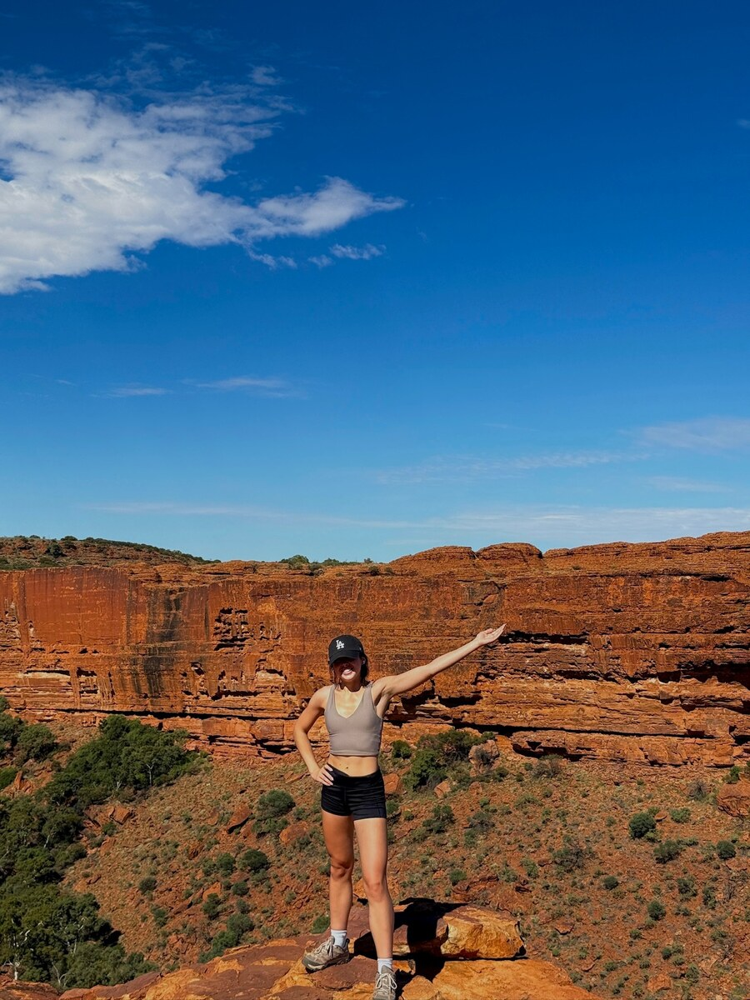

Favorite experiences
Big landscapes, coastal lookouts, alpine walks, and places that feel rewarding once you arrive.
About Nat
NatBackpacks is a travel project built around outdoor scenery, hiking, and practical trip planning. The goal is to make the site feel personal while still giving visitors clear, useful content.
I am most drawn to places that feel open, scenic, and slightly remote. I like trips that mix movement with quiet moments, whether that means a long viewpoint hike, a coastal walk, or simply reaching a place that feels visually different from everyday life.
This website brings those interests together through destination pages, a gallery, and gear notes. The design stays clean so the photos and writing can carry the experience without the layout feeling cluttered.
Big landscapes, coastal lookouts, alpine walks, and places that feel rewarding once you arrive.
Travel inspiration, image-based storytelling, and useful planning details in a more polished format.
